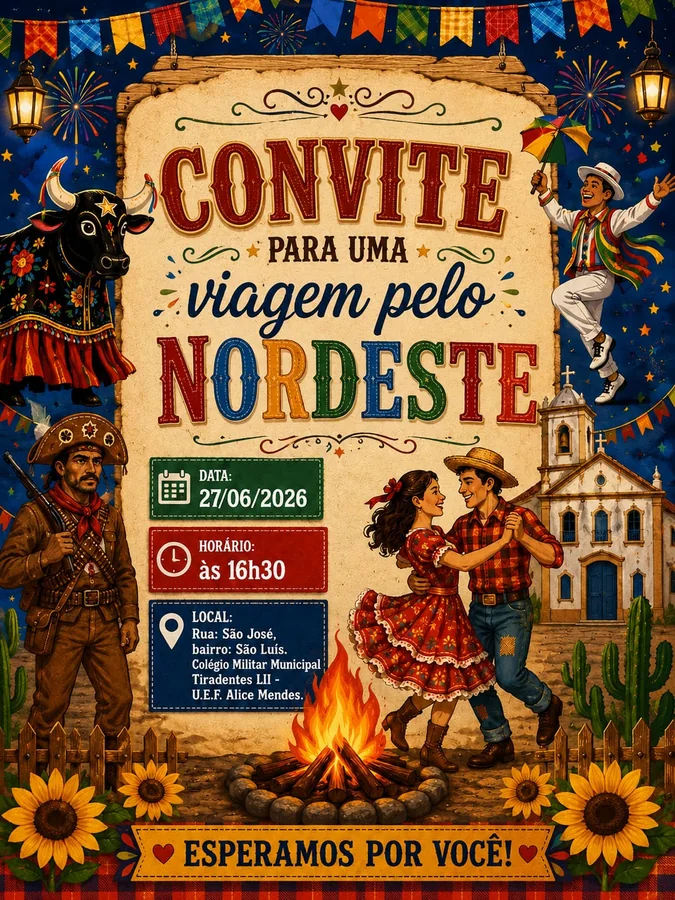
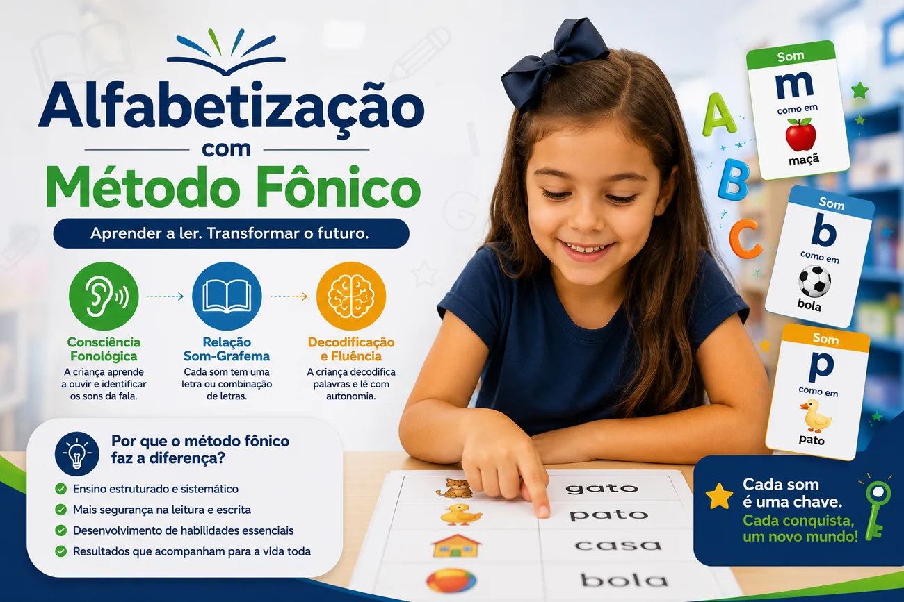
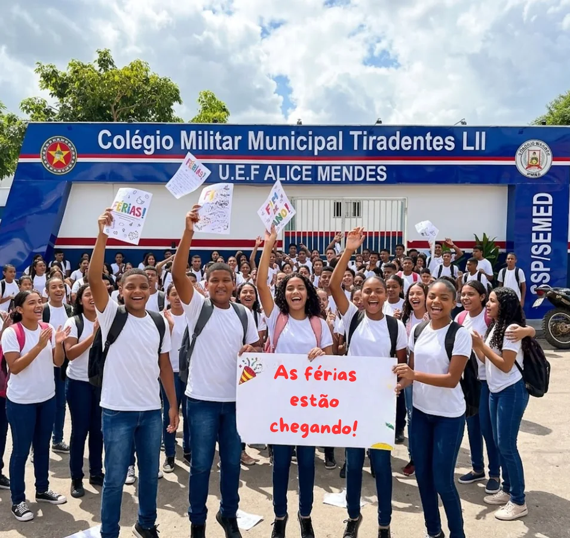
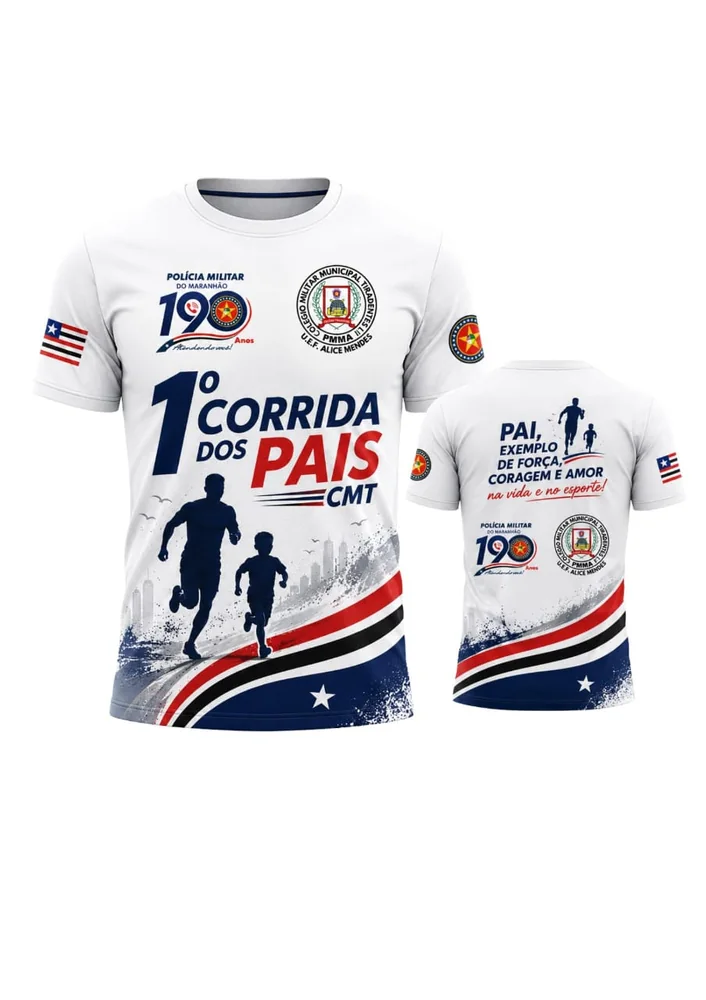

Projeto Junino: Uma Viagem pelo Nordeste 2026
A escola celebrou a cultura nordestina com apresentações, exposições e atividades interativas.
Ler maisAcompanhe comunicados, projetos pedagógicos, eventos culturais, atividades esportivas e informes do CMT LII.

A escola celebrou a cultura nordestina com apresentações, exposições e atividades interativas.
Ler mais
A abordagem trabalha a relação entre letras e sons e amplia a autonomia na leitura e na escrita.
Ler mais
Comunicado à comunidade escolar sobre o período de descanso e a preparação para o próximo semestre.
Ler mais
Integração entre famílias, estudantes, servidores e comunidade em percursos de 2 km e 5 km.
Ler mais